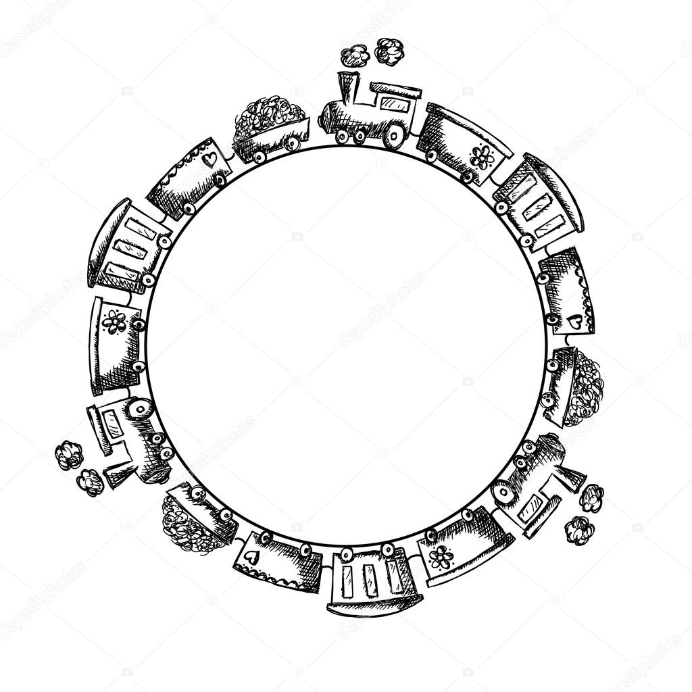
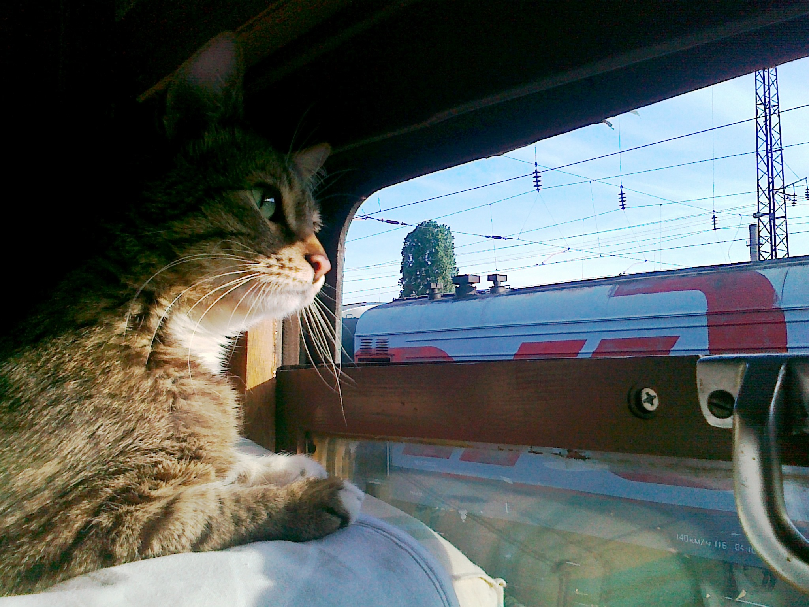

Допустим, есть поезд, у которого первый и последний вагон сцеплены.. и он круговой

Вася купил билет на такой поезд и оказался в своём вагоне.

И тут он захотел пересчитать все вагоны поезда и пометил свой вагон,
включив там свет.
Чтобы посчитать длину поезда, он решил ВЫКЛЮЧАТЬ свет во всех вагонах, где горит свет до тех пор пока в
его родном вагоне тоже не погаснет свет. Но Вася умный, Вася шёл и считал вагоны.
Сколько же вагонов насчитал кот?